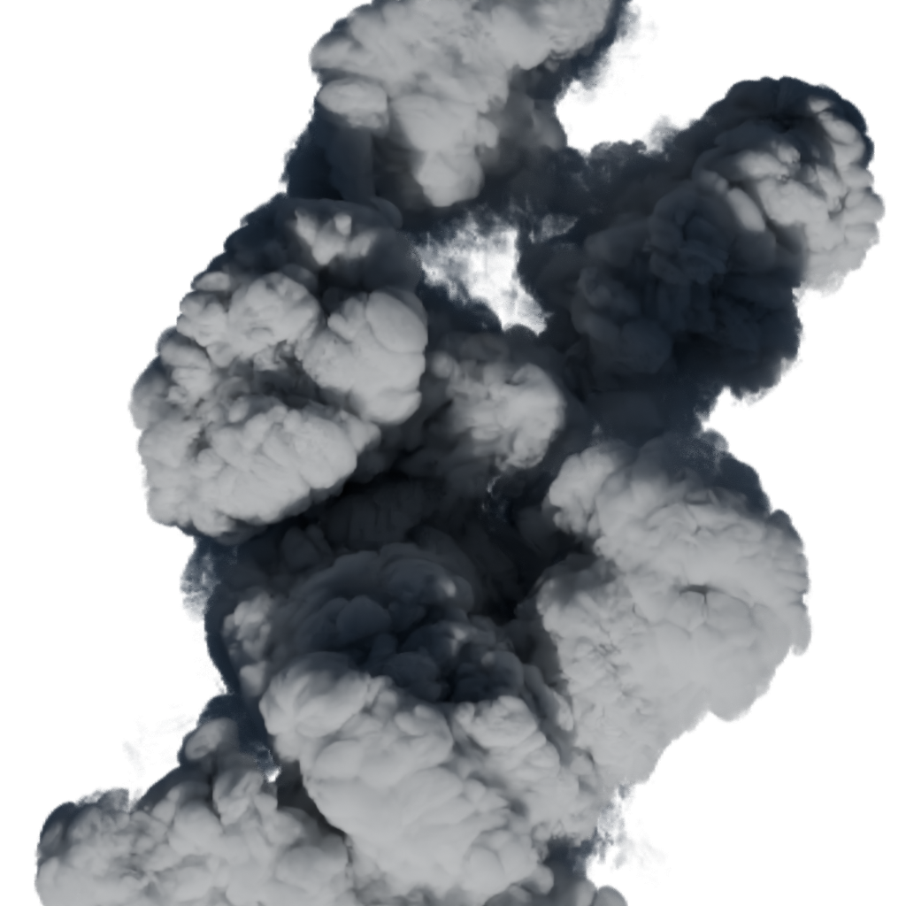
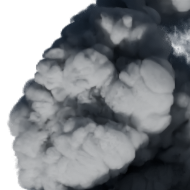
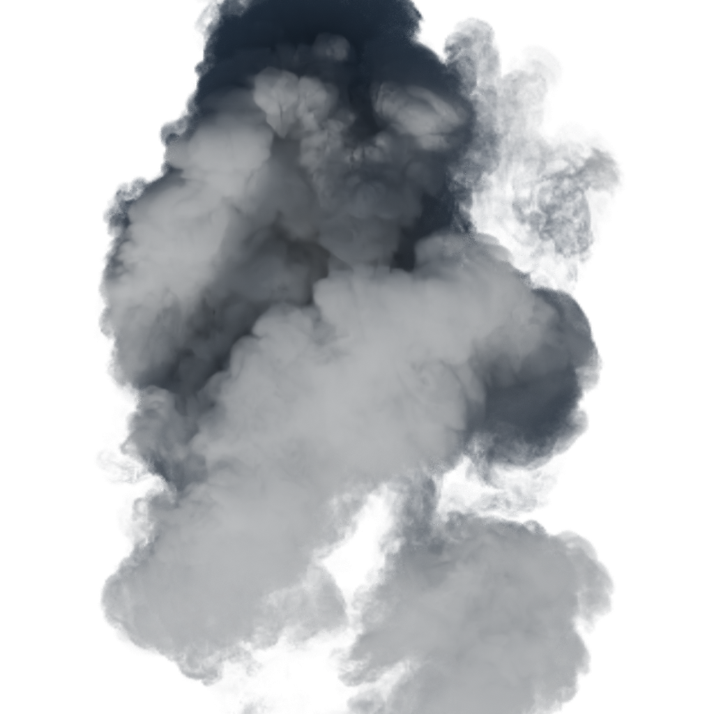
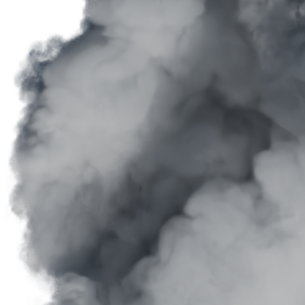
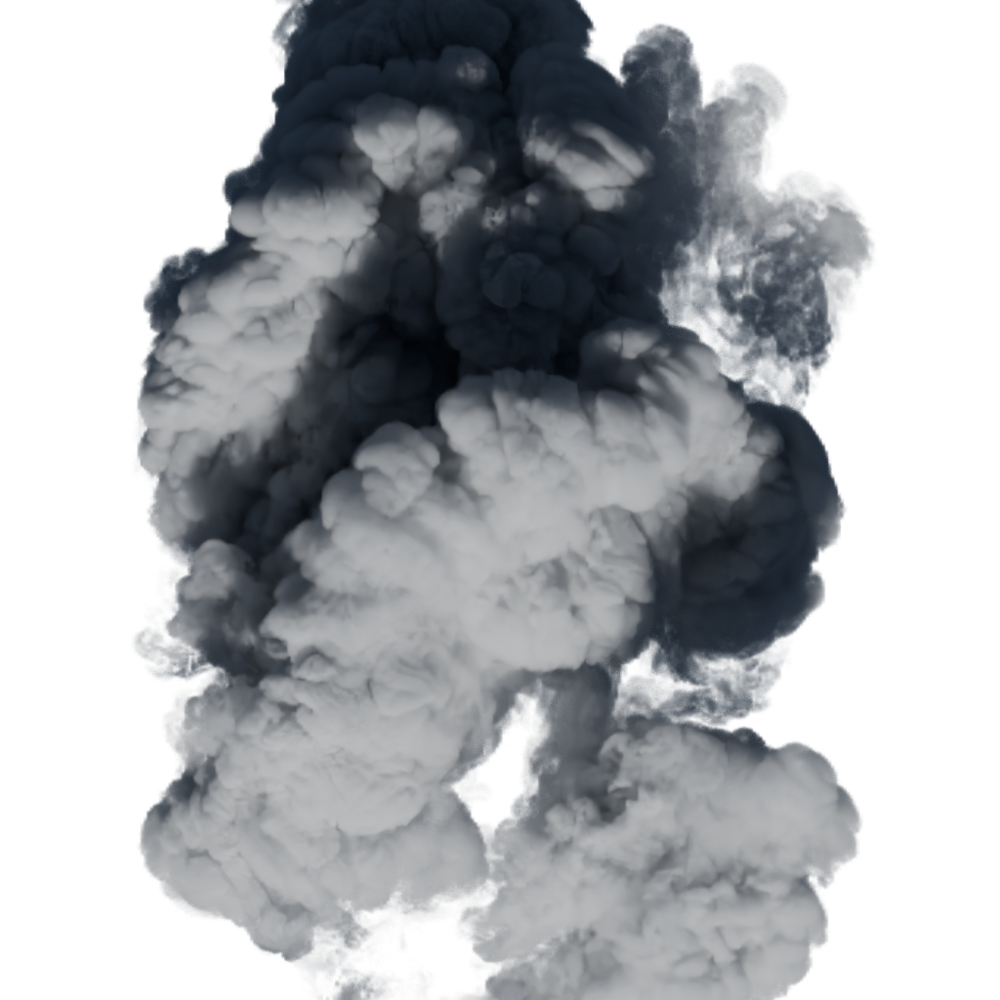
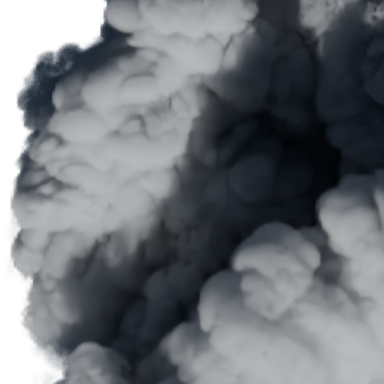
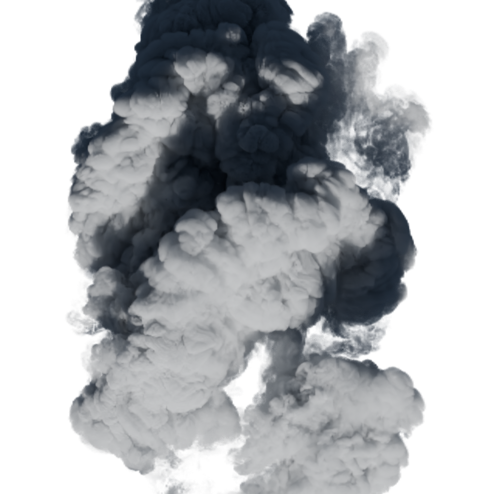
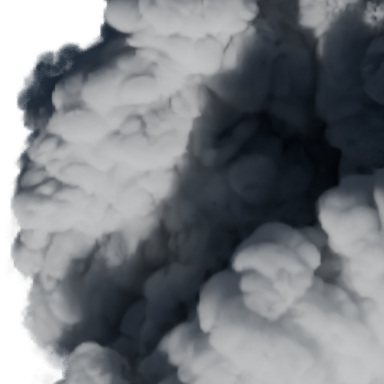
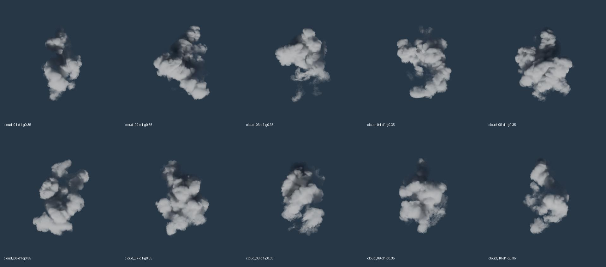

cloud_06-d1-g0.35

1:1 crop（384px）

D130 baseline 재사용 · 165.0초
06과08을 같은빛·카메라에서 density1/4로 비교합니다. 마지막08은 density4를 유지하고 산란방향 g만 .35→0으로 바꿨습니다. density4는 실험값이며 해상도를 올린 것이 아닙니다.
원본10종 조사에서08의 갈라진 외곽을 후보로 골랐습니다. 새 고해상도 원본을 확보한 비교는 아닙니다. 서로 다른 구름은 형상과 빛의 통과길이가 달라 완전히 같은 조형 비교가 아닙니다.
TUNE · 국소 에셋 비교. 실제 북유럽 씬 적용, 하강 인계, 스크롤 품질 및 GPU frame 성능은 미검증입니다. 흰 면·골의 가독성과 가장자리 질감을 따로 봐 주세요.
실제 조건·원본 SHA · 검증 범위·측정 · 동일 좌표 crop
1:1 crop（384px）
D130 baseline 재사용 · 165.0초

1:1 crop（384px）

새 native 렌더 · 111.3초

1:1 crop（384px）

새 native 렌더 · 152.8초

1:1 crop（384px）

새 native 렌더 · 98.9초

1:1 crop（384px）

새 native 렌더 · 93.1초
384² / 최대32samples / ortho10. 위1024² 가까운뷰와 품질·구도가 다릅니다.
